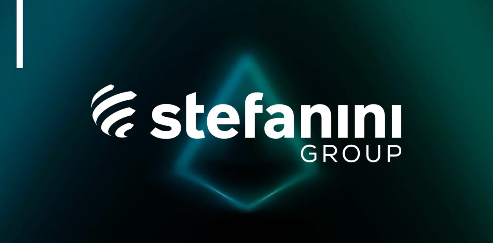

9 de junho de 2021 | Trabalho atual
Pleno Technical Analyst | Stefanini Brasil

Trabalhos desenvolvidos:
Resolução de pedidos e incidentes através do service now, suporte ao usuário,
configuração e instalação de servidores locais e web, configuração e instalação
de Switch firewall localmente, desenvolvimento de aplicações, banco de dados com
MYSQL e SQL SERVER, consultas a bancos de dados, experiência com AD, Scrum,
manutenção e instalação de computadores e impressoras.